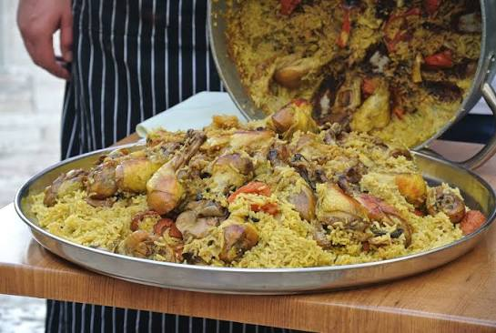

Maqluba

Description:
Maqluba is a classic Middle Eastern one-pot dish that translates literally to "upside-down."
It features layers of seasoned rice, fried vegetables,
and spiced chicken or meat, all cooked together in a single pot.
Once fully cooked, the pot is dramatically flipped onto a large serving platter,
revealing a savory tower topped with golden fried cauliflower, eggplant, and tender chicken.
It is usually served hot alongside plain yogurt or a fresh cucumber-tomato salad.
Ingredients:
- 1 kg chicken pieces
- 2 cups short-grain rice (soaked and drained)
- 1 large eggplant (sliced and fried)
- 1 head of cauliflower (cut into florets and fried)
- 2 medium potatoes (sliced and fried)
- 1 large onion (chopped)
- 4 cups chicken broth
- 2 tbsp olive oil
- 1 tbsp Maqluba spice mix (allspice, cinnamon, cumin, turmeric, cardamom)
- Salt and black pepper to taste
- Fried pine nuts or almonds for garnish
Steps:
- Season chicken with salt, pepper, and spices, then brown it in a large pot with olive oil until golden.
- Add water and onions to the pot, cover, and simmer for 30 minutes until chicken is cooked through. Strain and save the broth.
- In the bottom of a deep pot, arrange a layer of cooked chicken, followed by fried potatoes, eggplant, and cauliflower.
- Spread the soaked rice evenly over the vegetable and chicken layers.
- Gently pour the warm spiced chicken broth over the rice until it is covered by about an inch.
- Bring to a boil, then lower the heat to low, cover tightly, and simmer for 20 to 25 minutes until the rice has absorbed all liquid.
- Let the pot sit covered off the heat for 10 minutes. Place a large tray over the top, flip the pot upside down carefully, and lift the pot off slowly to serve.
Home